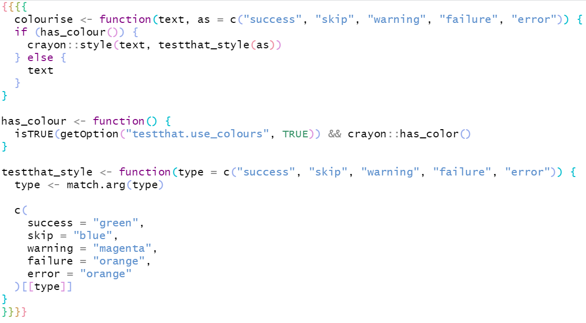
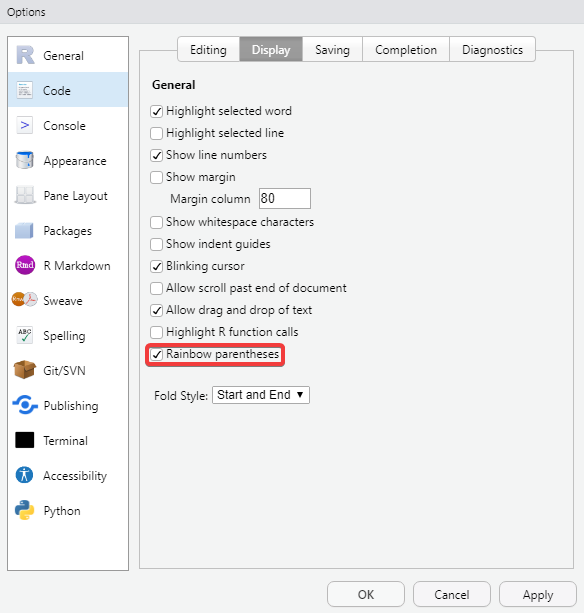
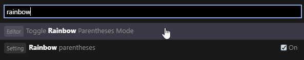
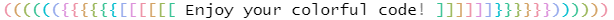

2020-11-04

This post is part of a series on new features in RStudio 1.4, currently available as a preview release.
Beautiful code themes and rainbow parentheses, a tale as old as…well at least 2017. Being able to color your parentheses (and brackets and braces) based on the level of nesting has been a highly requested feature for years and we’re happy to announce that it’s available in the upcoming 1.4 release of RStudio.
Rainbow parentheses are turned off by default. To enable them:
Open Global Options from the Tools menu
Select Code -> Display
Enable the Rainbow Parentheses option at the bottom

If you would prefer to only use the Rainbow Parentheses option on a per-file basis (just for specific debugging, for example) you can toggle this option by using the Command Palette.
Open the Command Palette by either using the keyboard shortcut (Default: Control/Command + Shift + P) or through the Tools -> Command Palette menu option.
Type rainbow to quickly highlight the Toggle Rainbow Parentheses Mode option and select it to toggle the option.

This is on the file itself so the rest of your environment will continue to respect the global setting.
If you don’t like the default colors, or they don’t quite work for your theme, you can customize them to whatever you like. See this article on writing your own RStudio theme. The relevant classes to change are .ace_paren_color_0 to .ace_paren_color_6.

You can try out the new features from this blog series by installing the RStudio 1.4 Preview Release. If you do, we very much welcome your feedback on our community forum!